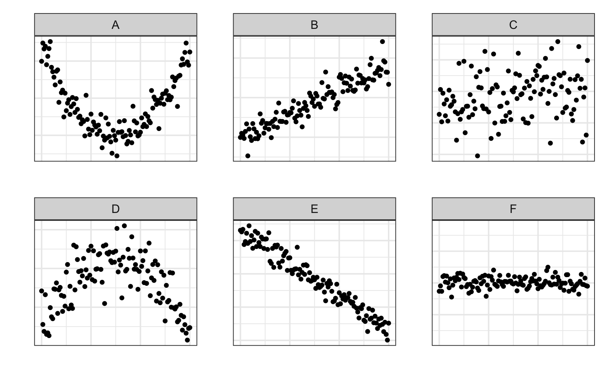
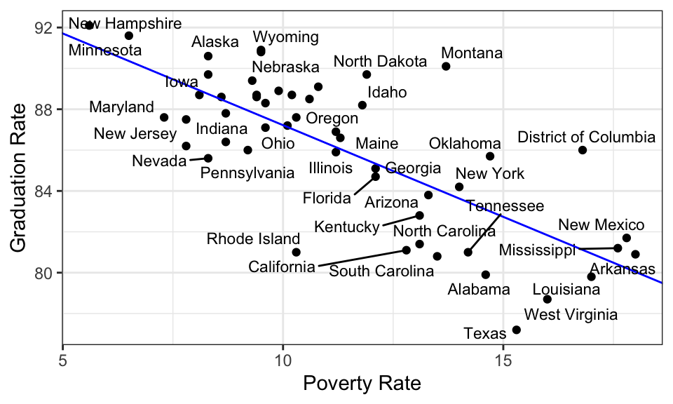

Code
countdown::countdown(1, top = 0)01:00
. . .
. . .
. . .
. . .
countdown::countdown(1, top = 0)01:00
What is the (Pearson) correlation coefficient between these two variables?

This plot has a strong negative linear association, so the correlation coefficient will be around -.8 or -.9.
The goal of this exercise is threefold: - Start calibrating the ability to associate the correlation with the structure in a scatter plot. - Make it clear that this is still just an informal eye-balling procedure (therefore multiple answers can be reasonable, but some are un-reasonable). - Set some of them up for a challenge on the next one; some will conflate correlation with association.
# simulate data -----------------------------------------------------
set.seed(9274)
x1 <- seq(0, 6, by = 0.05)
y_u <- (x1-3)^2 - 4 + rnorm(length(x1), mean = 0, sd = 1)
y_lin_pos_strong <- 3*x1 + 10 + rnorm(length(x1), mean = 0, sd = 2)
y_lin_pos_weak <- 3*x1 + 10 + rnorm(length(x1), mean = 0, sd = 20)
x2 <- seq(-8, -2, by = 0.05)
y_n <- -1 * (x2 + 5)^2 + 1 + rnorm(length(x2), mean = 0, sd = 2)
y_lin_neg_strong <- -5 * x2 + 3 + rnorm(length(x2), mean = 0, sd = 2)
y_none <- rnorm(length(x2), mean = 0, sd = 1)
df <- data.frame(x = c(rep(x1, 3), rep(x2, 3)),
y = c(y_u, y_lin_pos_strong, y_lin_pos_weak,
y_n, y_lin_neg_strong, y_none),
plot_num = rep(LETTERS[1:6], each = length(x1)))
library(tidyverse)
pa <- df %>%
filter(plot_num == "A") %>%
ggplot(aes(x = x,
y = y)) +
geom_point() +
facet_wrap(vars(plot_num), scales = "free") +
theme_bw(base_size = 14) +
theme(axis.text.x=element_blank(),
axis.ticks.x=element_blank(),
axis.text.y=element_blank(),
axis.ticks.y=element_blank()) +
labs(x = "",
y = "")
pb <- df %>%
filter(plot_num == "B") %>%
ggplot(aes(x = x,
y = y)) +
geom_point() +
facet_wrap(vars(plot_num), scales = "free") +
theme_bw(base_size = 14) +
theme(axis.text.x=element_blank(),
axis.ticks.x=element_blank(),
axis.text.y=element_blank(),
axis.ticks.y=element_blank()) +
labs(x = "",
y = "")
pc <- df %>%
filter(plot_num == "C") %>%
ggplot(aes(x = x,
y = y)) +
geom_point() +
facet_wrap(vars(plot_num), scales = "free") +
theme_bw(base_size = 14) +
theme(axis.text.x=element_blank(),
axis.ticks.x=element_blank(),
axis.text.y=element_blank(),
axis.ticks.y=element_blank()) +
labs(x = "",
y = "")
pd <- df %>%
filter(plot_num == "D") %>%
ggplot(aes(x = x,
y = y)) +
geom_point() +
facet_wrap(vars(plot_num), scales = "free") +
theme_bw(base_size = 14) +
theme(axis.text.x=element_blank(),
axis.ticks.x=element_blank(),
axis.text.y=element_blank(),
axis.ticks.y=element_blank()) +
labs(x = "",
y = "")
pe <- df %>%
filter(plot_num == "E") %>%
ggplot(aes(x = x,
y = y)) +
geom_point() +
facet_wrap(vars(plot_num), scales = "free") +
theme_bw(base_size = 14) +
theme(axis.text.x=element_blank(),
axis.ticks.x=element_blank(),
axis.text.y=element_blank(),
axis.ticks.y=element_blank()) +
labs(x = "",
y = "")
pf <- df %>%
filter(plot_num == "F") %>%
ggplot(aes(x = x,
y = y)) +
geom_point() +
facet_wrap(vars(plot_num), scales = "free") +
theme_bw(base_size = 14) +
ylim(-9, 9) +
theme(axis.text.x=element_blank(),
axis.ticks.x=element_blank(),
axis.text.y=element_blank(),
axis.ticks.y=element_blank()) +
labs(x = "",
y = "")
library(patchwork)
(pa + pb + pc) / (pd + pe + pf)
Which four plots exhibit the strongest association?
countdown::countdown(1, top = 0)01:00
Student will likely identify A, B, E, and F. F only appears to be highly associated because of the scaling of the y-axis. This is a good opportunity to review definition of association. The following slides demonstrate the effects of that scaling.
df_fdf_f x y
1 -8.00 -1.307007369
2 -7.95 -0.466886973
3 -7.90 -1.317638373
4 -7.85 1.008059015
5 -7.80 1.153714017
6 -7.75 0.136000314
7 -7.70 1.081268517
8 -7.65 0.027234440
9 -7.60 -0.755489564
10 -7.55 0.643581028
11 -7.50 -2.221816425
12 -7.45 -0.352711462
13 -7.40 0.788325702
14 -7.35 0.348209977
15 -7.30 0.888132692
16 -7.25 1.494640228
17 -7.20 0.539665177
18 -7.15 1.534245783
19 -7.10 -0.636288267
20 -7.05 1.400750746
21 -7.00 0.857266821
22 -6.95 0.689240640
23 -6.90 -0.578689332
24 -6.85 -0.247484190
25 -6.80 -1.616711187
26 -6.75 -0.211921880
27 -6.70 -1.389650022
28 -6.65 -0.667030427
29 -6.60 0.265923179
30 -6.55 0.368512913
31 -6.50 0.159370185
32 -6.45 -0.803029578
33 -6.40 -1.181853575
34 -6.35 0.799141786
35 -6.30 -0.119741600
36 -6.25 1.055099362
37 -6.20 0.260610303
38 -6.15 1.215058556
39 -6.10 -2.093776227
40 -6.05 -0.340475843
41 -6.00 1.098181964
42 -5.95 -1.022920292
43 -5.90 0.997308309
44 -5.85 0.442282185
45 -5.80 2.024841893
46 -5.75 -0.206236931
47 -5.70 -0.366921396
48 -5.65 -0.540982671
49 -5.60 0.326545855
50 -5.55 1.185875818
51 -5.50 0.163270582
52 -5.45 -0.252746010
53 -5.40 -0.538783647
54 -5.35 0.239830058
55 -5.30 0.227238979
56 -5.25 0.146973095
57 -5.20 1.206565164
58 -5.15 0.274237725
59 -5.10 0.291223416
60 -5.05 -0.048435420
61 -5.00 -0.160503335
62 -4.95 0.982662625
63 -4.90 -0.009812706
64 -4.85 -1.236449694
65 -4.80 -0.220086594
66 -4.75 0.916450245
67 -4.70 0.312158589
68 -4.65 -0.271222289
69 -4.60 -0.362834150
70 -4.55 0.690127669
71 -4.50 0.954579372
72 -4.45 -1.002334741
73 -4.40 -0.827510811
74 -4.35 -0.481050964
75 -4.30 0.213284850
76 -4.25 0.694018655
77 -4.20 0.318705891
78 -4.15 1.359291786
79 -4.10 0.299499214
80 -4.05 -0.136853535
81 -4.00 -0.907524278
82 -3.95 0.580039124
83 -3.90 -0.451761432
84 -3.85 -0.637651429
85 -3.80 -0.377287558
86 -3.75 -0.108975033
87 -3.70 0.266174878
88 -3.65 1.950537958
89 -3.60 2.481797153
90 -3.55 0.024020307
91 -3.50 -0.271974465
92 -3.45 -0.324420253
93 -3.40 0.914990966
94 -3.35 -0.177070403
95 -3.30 1.668125591
96 -3.25 -0.196626395
97 -3.20 0.909735944
98 -3.15 0.379802619
99 -3.10 -0.717674077
100 -3.05 -0.137978296
101 -3.00 -0.032596143
102 -2.95 -1.151078285
103 -2.90 -0.035147120
104 -2.85 1.289653594
105 -2.80 1.301664628
106 -2.75 -1.314453018
107 -2.70 0.279983464
108 -2.65 -0.134496134
109 -2.60 -0.993968666
110 -2.55 -1.125493956
111 -2.50 -0.585075814
112 -2.45 -0.360440229
113 -2.40 -0.128946258
114 -2.35 -1.763949074
115 -2.30 0.249921212
116 -2.25 1.356315758
117 -2.20 -0.221241869
118 -2.15 -0.255945298
119 -2.10 0.764032808
120 -2.05 -0.429023148
121 -2.00 -0.506416626df_f %>%
ggplot(aes(x = x,
y = y)) +
geom_point() +
theme_bw()df_f %>%
ggplot(aes(x = x,
y = y)) +
geom_point() +
theme_bw()
When considering the structure in a scatter plot, pay attention to:
. . .
. . .
countdown::countdown(1, top = 0)01:00
library(ggrepel)
p_nolabs +
geom_text_repel(aes(label = State), size = 3)
. . .
Which state has the highest graduation rate given its poverty rate?
This assesses whether or not students have an informal sense of what a residual is.
countdown::countdown(minutes = 25, top = 1)25:00
countdown::countdown(minutes = 5, top = 0)05:00
countdown::countdown(minutes = 35, top = 1)35:00